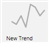

Create a Trend View Definition from Related Items
- Navigate to the Related Items tab and select New Trend

. - Trend View opens a secondary view.
- Change the Trend View properties and the properties for each series.
For more information, see Configuring Trend View Definition. - Click Save
 .
.